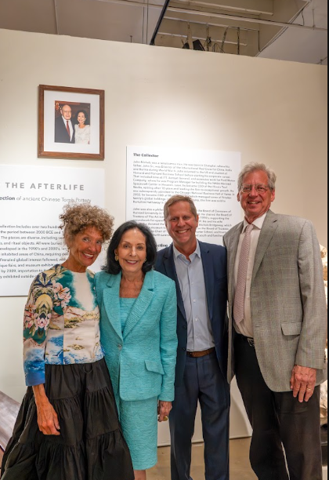

“Alexandra Nichols called us in February and invited us to come up to have me evaluate. I was floored! So many pieces and such good examples, all hidden behind a wall in John’s private office. Almost nobody ever saw them,” Doug Van Tress on the John Nichols Collection now on display and for sale at the Golden Triangle.
One of Chicago’s business and philanthropic leaders who can honestly bear the mantle of Renaissance man, the late John Nichols, who headed Illinois Tool Works and Marmon Group, perhaps felt a love for Chinese art practically from birth. Born in Shanghai, he was the son of the Director of the Red Cross for China, Burma and India during World War II. Although his family was forced to flee to the United States when the Japanese invaded China, Nichols returned to China on business in the mid-1980s and began to collect Chinese tomb pottery.


Van Tress, CEO of the Golden Triangle with showrooms in Chicago and Asia, told us:
“The Golden Triangle started buying Chinese tomb pottery in about 1998: of course, I loved it from the start because it was so old and mysterious. Then it became very popular with collectors until the whole category was banned in 2009. Now it can’t be imported from China or even sold back to China. Trade within the US and most other countries remains legal.
“When we say ‘In the world of Chinese antiques’ we’re usually talking about what I would call ‘polite’ and refined items, like Ming vases, 500 years old plus or minus or hardwood furniture form the 18th and 19th centuries. Chinese tomb pottery, however, can go back 5000 years and it often looks like it; muddy, crusty and fossilized. It appeals to a certain kind of collector. It appeals to me! The thought that I can have a 4,000 year old figure on my desk as I use AI to help me figure out the specific culture it belongs to is a ridiculous privilege. Touching the burial earth and mineralized encrustations makes me feel like I’ve travelled back in time.”

“After meeting with Alexandra, we agreed to take a very large chunk of the collection and display it like a museum show, with white cubes, special lighting, academic descriptions; everything. It was an honor to receive the pieces and an art project to properly display them. Our art director and co-owner Chauwarin Tuntisak did the display. I did the cataloging with help from my staff. We spent many evening hours going over the documents and notes and test certificates to understand the complete story as much as possible. The show will be up through November with additional pieces being added, and the full collection, including sold items, will be on view through August. It has been very popular with many items selling immediately.
“The pieces were initially sourced from mainland China, then Hong Kong and then from galleries in North America and Europe. Several pieces came from the Golden Triangle in Chicago, which is how we first met Mr. and Mrs. Nichols.”

“It is important to realize that the famed Chinese terra cotta warriors weren’t discovered until the 1970s. A farmer working in a field found the first tomb. Ten years later many more artifacts began to come out of the ground. Before all those giant high rises came in the buildings were of wood and workers didn’t need to dig beyond four feet to build a foundation. By the 1990s, you had to dig down six stories for the high rises that came in so quickly. The tomb art had been well placed on flat land outside of the old cities, and all of a sudden many pieces were being discovered. Trade got very professional and so many things were coming from Hollywood Road in Hong Kong. Now, of course, trading with the U.S. has become more dicey. With the UNESCO trade agreement, whatever we have in the US now is all we’re going to have.”


Van Tress told us that there are about 120 money trees documented in the world. “Imagine finding one in a Winnetka pool house, what a discovery,” he said. “Burial art represented the things you would want in the next world, hence pets, money, what it takes to survive in the next life. The dogs were buried to represent both friendship and protection. Some of the watchtowers were over five feet tall. Many are very individualistic and represent the personality of the maker. Although tomb art, many have a very kind, even joyful spirit, contrary to expectations. Some have even been mistaken for Pre-Columbian art.”
“The show has been very well-received. It is a relatively obscure category for collecting—not like Picasso lithographs—and you have to see it in person. More than 50 percent of the collection has already been sold, though many pieces will remain on display into September. Alexandra has repeatedly said that she wanted them to find ‘good homes’, meaning passionate collectors and that she wanted the public to see them all together. Even people that don’t know anything about it spend way too long reading the descriptions and of course the bio of John Nichols. Even quite young visitors. They are fascinated, for example, by the fact that while he was with Ford Motor Company he led the construction of the Manned Space Center outside of Houston. They say:
“It’s hard to believe this is a private collection.”
“The fact that you can purchase museum-quality pieces is amazing.”
“It’s like walking through a museum.”

“John passed away a few years ago and never got the chance to organize or exhibit his collection, so this is a posthumous tribute to his genius and passion,” Van Tress said. “He had only shown his collection previously to family and friends. Seeing them for the first time was like walking into a secret shop in Hong Kong. The collection has a very special history.”


For further information about the Golden Triangle at 2035 West Grand visit: goldentrangle.biz